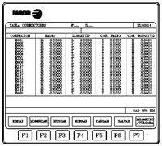
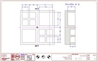

El control dispone de una tabla de hasta 100 parejas de valores para
compensación de radio y la logitud de la herramienta (TxxD00-TxxD99). R
indica el radio de la herramienta et I indica el valor que se suma o
resta al valor de R para corregir pequeñas variaciones del radio de la
herramienta. L indica la longitud de la herramienta y K el valor que
suma ó se resta al valor de L para corregir pequeñas variaciones de la
longitud de la herramienta.
Los valores máximos de compensacíon son:
-
R+/-1000 mm ó +/-39,3699 pulgadas. L+/-1000 mm ó +/-39,3699 pulgadas
- I+/-32,766 mm ó +/-1,2900 pulgadas. K+/-32,766 mm ó +/-1,2900 pulgadas
No hay que confundir la compensación de radio y en longitud que veremos
más adelante en otro apartado y la compensación del desgaste de la
herramienta del radio y en longitud. A través del siguiente ejemplo
veremos en que consiste la corrección del desgaste del radio y en
longitud cuando se trabaja con una pieza con tolerancias. Se puede
verificar y modificar los valores de I y K
sin detener la ejecución de un ciclo, es decir cuando la herramienta
este en estado de mecanización aplicara las correcciones indicadas
cuando se cargara la próxima vez. En la imagen puedes ver una tabla de correctores del fabricante (Fagor).
En este ejemplo La pieza de dibujo tiene una tolerancia dimensional de las cajeras rectangulares de y la profundidad Z. Por ejemplo cojamos el caso de la
cajera de 40 mm de ancho y 40 mm de alto. Una vez mecanizada la pieza
se obtiene una medida de alto y ancho de 40,5 mm. Por lo tanto 0.3 mm
fuera de tolerancias.
y la profundidad Z. Por ejemplo cojamos el caso de la
cajera de 40 mm de ancho y 40 mm de alto. Una vez mecanizada la pieza
se obtiene una medida de alto y ancho de 40,5 mm. Por lo tanto 0.3 mm
fuera de tolerancias.
Si el acabado de la pieza se realiza con la herramienta T05, para que
esta herramienta mecanice 40 mm de ancho se debe disminuir el corrector
D05 en el plano XY en 0.5 mm del valor que tiene el radio en este momento. En la tabla de correctores debemos buscar el corrector D05 en este caso correspondiente a la herramienta T05 y al valor actual de I restamos 0.5 mm.
Si la herramienta T05 D05 deja esta vez una profundidad de 21.8 mm, por lo tanto 0.2 mm fuera de tolerancias ya que la medida sobre el plano es de 22 mm. En este caso la herramienta queda 0.2
mm mas corta en Z. En la taba de correctores esta vez al valor K de la
herramienta le sumamos 0.2 mm.
{kind=link}
{kind=link}